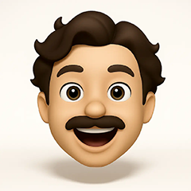

Still booting... hang tight.
For the best experience
Enter Full Screen (F11)
To begin, click on
Mitch Ivin
to log in

Mitch Ivin
Graphic Designer
Restart MitchIvin XP
After you log on, the system's yours to explore.
Every detail has been designed with a purpose.
Tap on the user icon to begin
Welcome
About Me
My Projects
Contact Me
My Resume
12:00 PM
Log Off Windows
Restart
Log Off


 About Me
About Me Contact Me
Contact Me My Resume
My Resume

 Log Off Windows
Log Off Windows